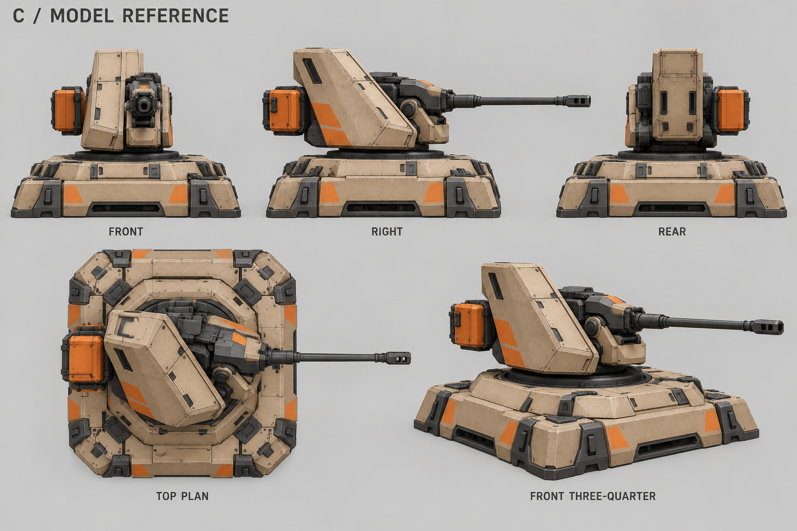
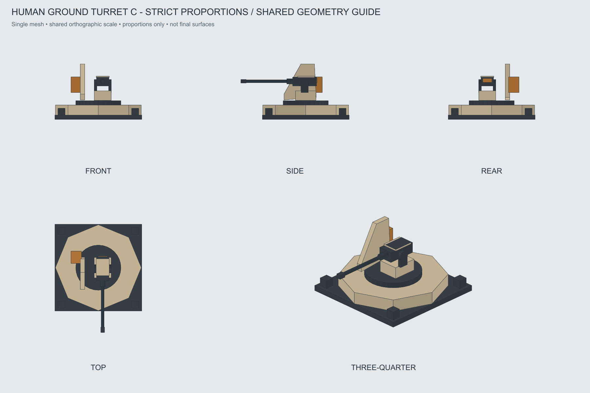

Наземная турель · C «Боковой щит»
Выбрана за строгие пропорции: тонкий длинный ствол, боковой щит, компактная установка на низком основании. Только наземные цели.
Паспорт моделирования · Оси и части · Входы для AI · OBJ · История вариантов
Утверждённый основной вид

Пять художественных ракурсов
Лист содержит ошибки бокового направления и позы сверху. Строгие проекции — на каркасе ниже.

Проекции одной геометрии
Основание 2×2, ствол выступает за него. Проверить вынос при вращении и размещение соседних зданий; не сжимать ствол ради пятна.

Отдельная схема наведения и отдачи
Условный вид сверху, не точный игровой риг или темп стрельбы. Поворот/наклон следуют цели, отдача — событию выстрела. Вспышки и дым не включены в модельный референс.
Подробные строительство и разрушение ещё не разработаны; ими займёмся после завершения визуала ПВО.